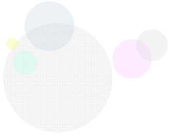

HOME / 교회소개 / 새가족등록안내
새가족등록안내
>> 1) 현장: 4층 로비 2) 온라인: 하단 버튼 이용
>> 주일예배 광고시간에 새가족 소개 및 인사
>> 예배 후, 3층 목양실에서 담임목사님과 만남
>> 5주간, 3층 두란노실에서 새가족 행복한 만남 교육 수료
>> 연 2회 새가족을 환영하는 자리에 초대합니다.
새가족 등록
새가족 환영인사(주일예배시)
담임목사님 면담
새가족 행복한 만남
새가족 환영회

새가족
등록안내
우리교회 처음 나오신 분이나 다른 교회에서
신앙생활하시다 이사 혹은 개인 사정 등으로
광명교회에 출석하여 새롭게 신앙 생활하기
원하는 분들을 새가족이라 부릅니다.
광명교회에 등록하시면 신앙생활에 필요한
양육 과정을 통하여 광명교회 한 공동체가 되어
그리스도의 지체로 더 풍성한
신앙생활을 할 수 있도록 도와 드리겠습니다.